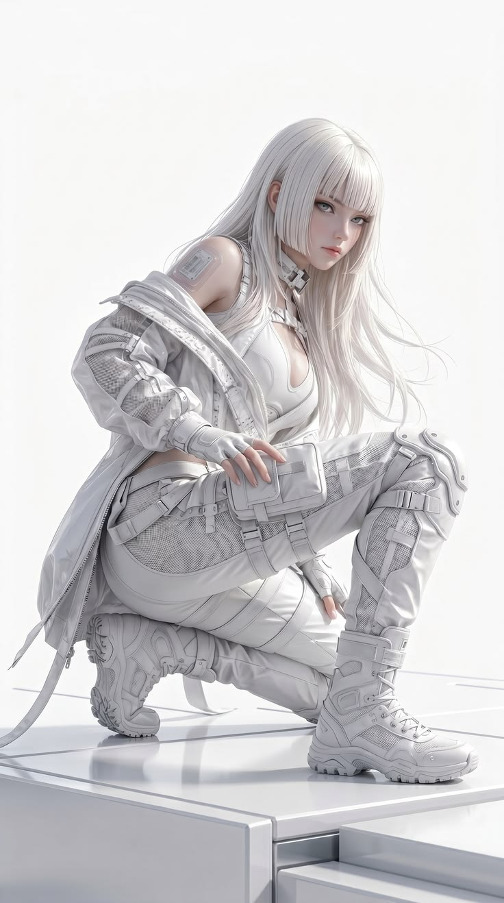
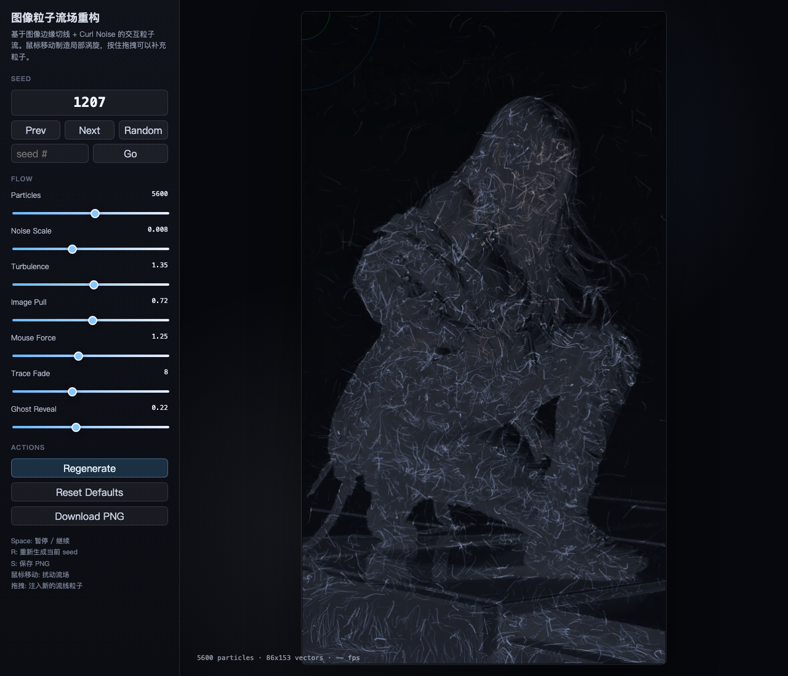
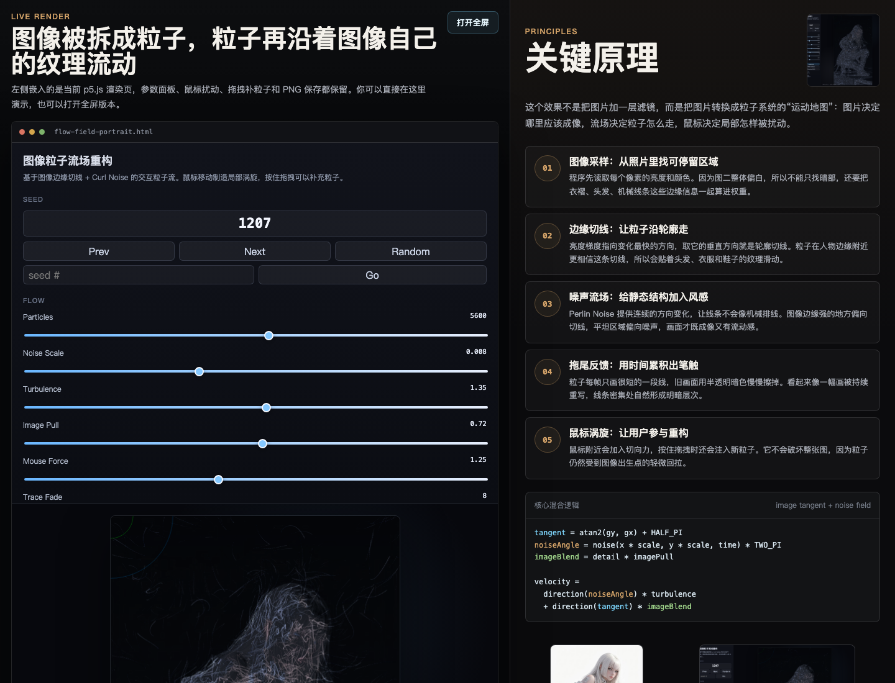

Flow Field Portrait
流场不是滤镜，而是一张运动地图
图像负责结构，噪声负责流动，鼠标负责扰动。粒子只是把这张地图画出来。

Step 01 · Sampling
先从照片里找出粒子应该停留的位置
luminance
亮度让阴影、衣服层次和身体结构被识别出来。
edge weight
边缘让头发、五官、鞋子和机械细节留下轨迹。

Step 02 · Vector Field
边缘切线定结构，噪声流场定风感
tangent = atan2(gy, gx) + HALF_PI
noiseAngle = noise(x * scale, y * scale, time)
velocity = noise + tangent * imageBlend

Step 03 · Forces
每个粒子同时受到三种力
它不是一次性散开，而是在图像、流场和鼠标之间不断协商。
流场力
沿当前位置的向量移动，决定整体笔触方向。
回家力
轻微拉回出生点，避免人物结构完全飞散。
鼠标涡旋
局部加入切向扰动，拖拽时补充新的流线。


Core Idea
哪里该成像，往哪里流动
图像重构类流场的关键，是让粒子读懂两件事：画面结构在哪里，以及结构处应该沿哪个方向移动。